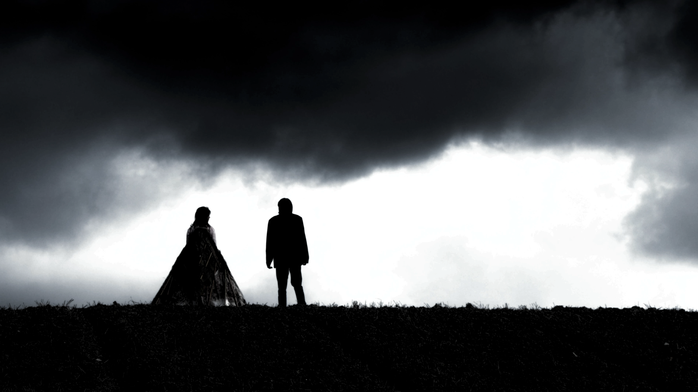
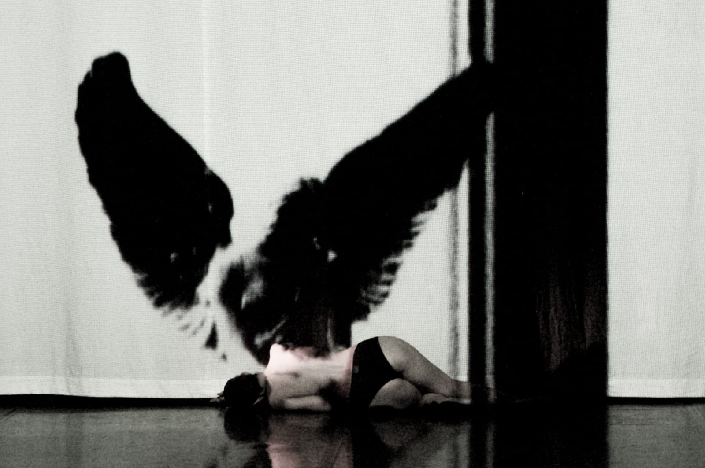
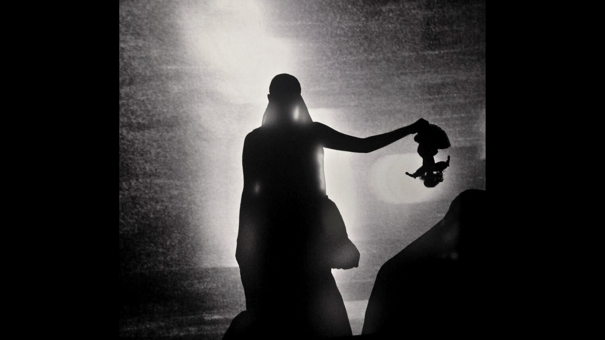
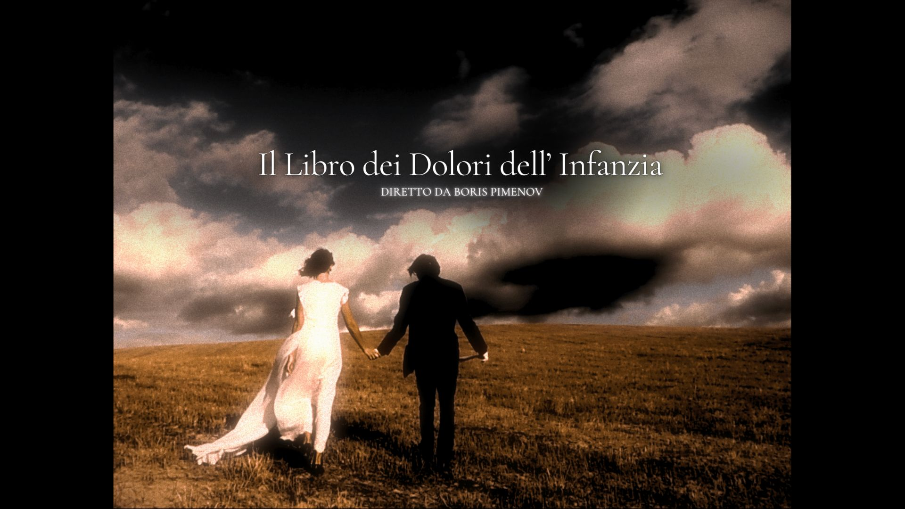
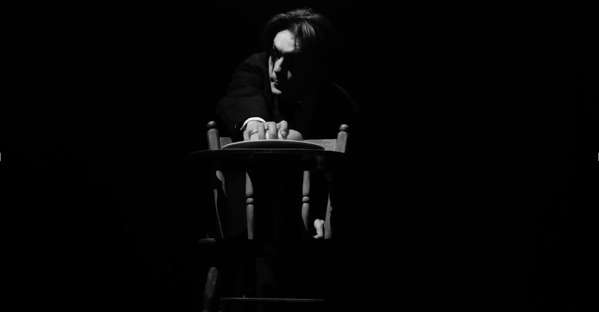
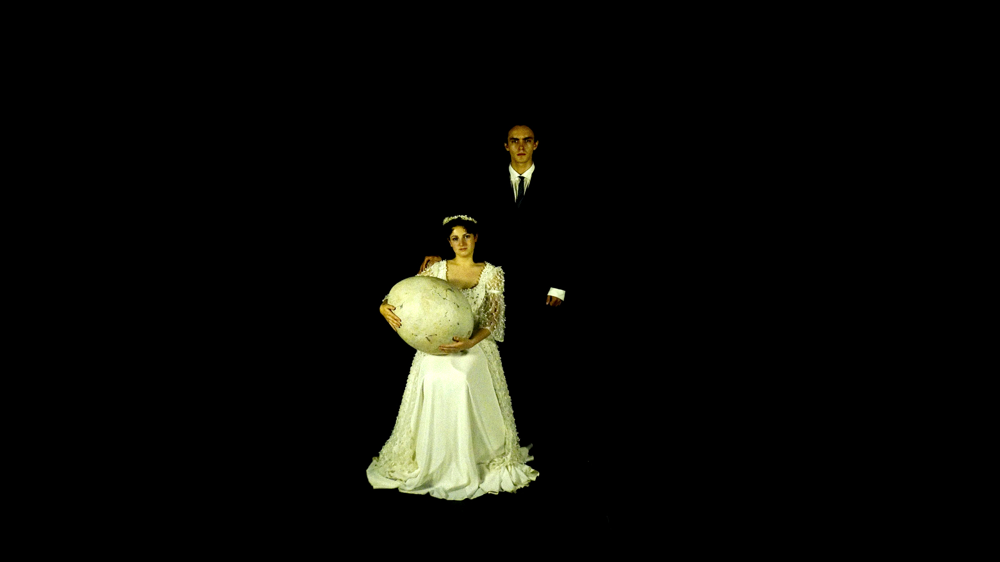

Il lavoro di ricerca personale tra teatro, cinema e video arte: progetti nati dalla mia visione, dalla scrittura alla regia.

Un lavoro teatrale che intreccia corpo, rito e immagine in un paesaggio visivo rarefatto.

Seconda edizione teatrale di Eburnea: drammaturgia performativa e spazio digitale in tempo reale.

Prima edizione in residenza: ricerca su memoria, presenza e interazione pubblico-performer.

Cinema intimo e visionario sul trauma infantile, tra immagini poetiche e tensione documentaria.

Rilettura audiovisiva di Gogol': atmosfera sospesa, ironia nera e materia scenica filmata.

Esordio cinematografico che unisce racconto allegorico, gesto performativo e composizione visiva.